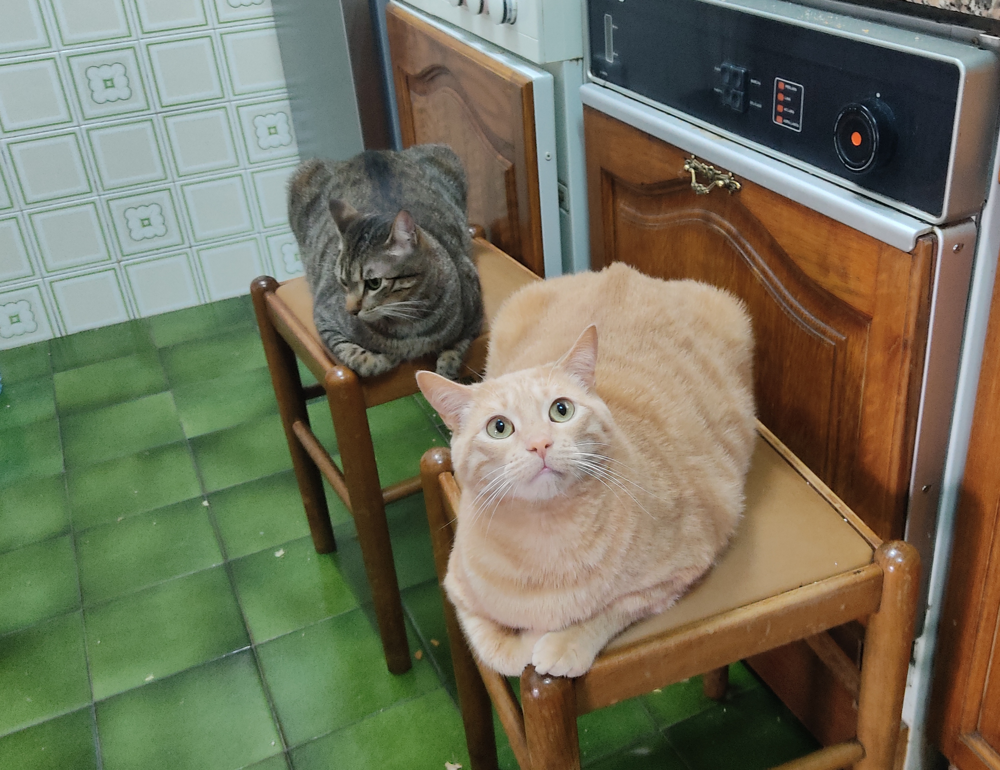

This is a page where you will learn some interesting information about my favourite animal, cats.
List of the most common names for cats:
Some of the most abundant breeds of cats:
My cats:
If you want to learn more specific information about cats you can visit some pages clicking this links:
Click here to go to page 1
Click here to go to page 2
Click here to go to page 3